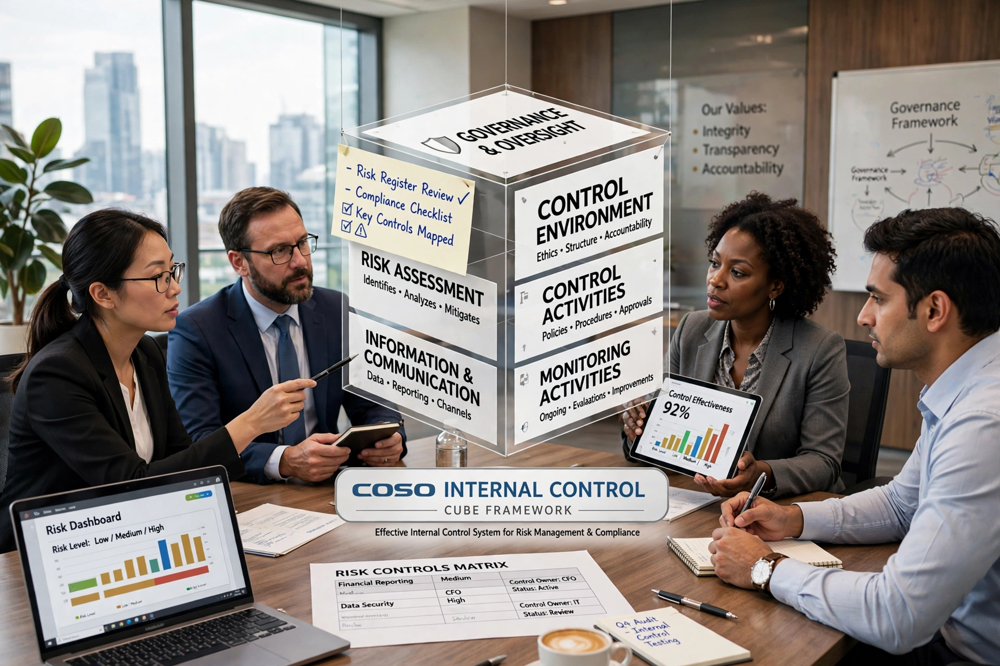

The Committee of Sponsoring Organizations of the Treadway Commission (COSO) is a joint initiative of five professional organisations in the United States, formed in 1985 to provide frameworks and guidance on enterprise risk management, internal control and fraud deterrence.

Its Internal Control — Integrated Framework (1992, updated 2013) defines internal control through five components: control environment, risk assessment, control activities, information and communication, and monitoring activities, applied across operations, reporting and compliance objectives — often visualised as the COSO cube.
The Enterprise Risk Management framework (2004, updated 2017 as Integrating with Strategy and Performance) broadened the focus to strategy and performance.
COSO became the most widely used internal-control framework for compliance with the Sarbanes–Oxley Act of 2002, whose Section 404 requires management assessment of controls over financial reporting. Sponsors include the AICPA, AAA, FEI, IMA and the Institute of Internal Auditors. See Internal control and Enterprise risk management.